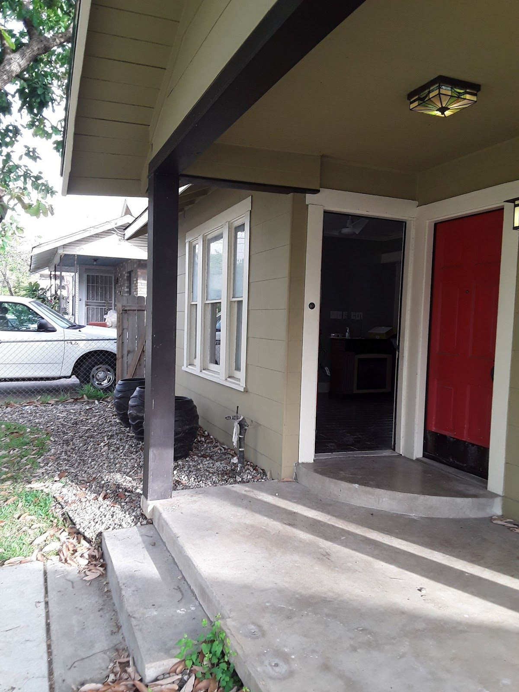
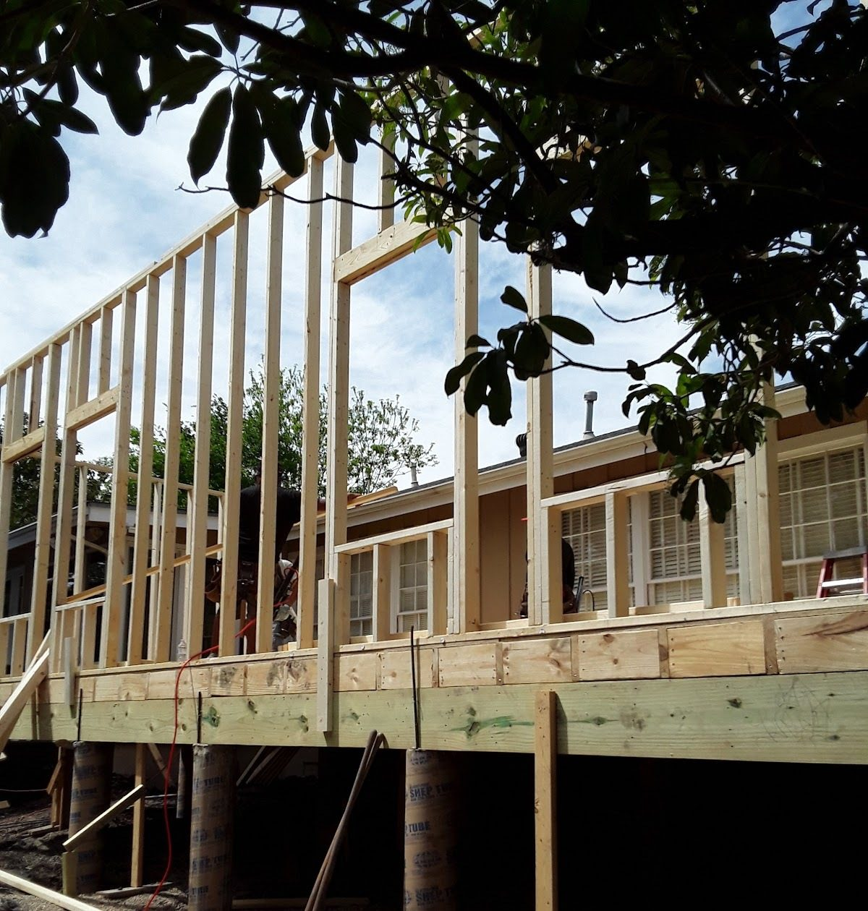
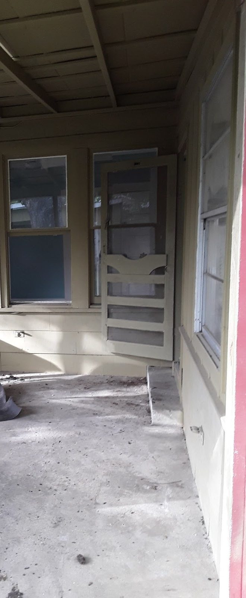
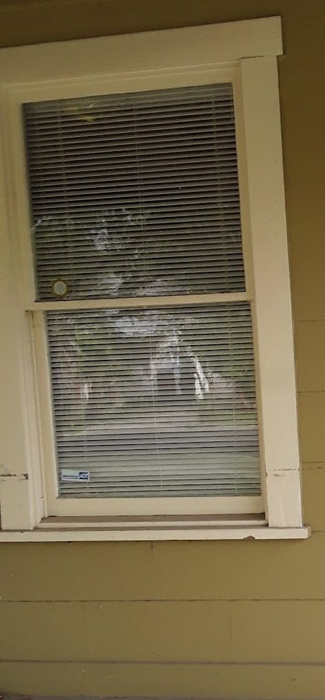

01
The roof
Shingles, decking, flashing and the porch-roof tie-in. On an old bungalow the work often starts by finding out what is under the shingles.
See roofing work →San Antonio, TX · 78210 · family-run
Roofing, porches, additions and remodeling for San Antonio homes, especially the older ones, from a family-run crew.
4.5stars on GoogleEsta página también está en español: toque ES arriba.

Tap a part of the house
A San Antonio bungalow has three big jobs in it: the roof, the porch and, when the family grows, the addition. Tap each one to see a photo and what the work involves.
Fig. 1 · a San Antonio craftsman bungalowTap 1, 2 or 3
01
Shingles, decking, flashing and the porch-roof tie-in. On an old bungalow the work often starts by finding out what is under the shingles.
See roofing work →
02
Posts, beams, ceiling, floor and steps. Getting the proportions right is what makes a rebuilt porch look original to the house.
See remodeling work →
03
New rooms and raised decks framed on new footings, then sheathed, roofed and finished to match the house.
Tell us your idea →What we do

Roofing · 01
When shingles are worn, missing or leaking in several places, the old layers come off down to the deck and a new roof goes on.

Roofing · 02
For a leak, a few blown-off shingles or a soft spot: the damaged area is opened, fixed and sealed without replacing the whole roof.

Roofing · 03
Old houses often hide rotten or spaced boards under the shingles; replacing them gives the new roof a solid base.

Remodeling · 01
Floors, ceilings, posts and porch roofs on older homes, rebuilt so the porch is solid and looks like it belongs to the house.
Remodeling · 02
Adding a room or a raised deck: new footings, framing, walls and a roof tied into the existing house.

Remodeling · 03
Walls, floors, trim and the rooms inside, updated so an old house works for the way you live now.

Who you’re calling
One family crew on the roof, on the porch and in the rooms in between. Call or text in English or Spanish.
4.5stars on Google · read the reviewsIllustrative: a roof edge in the rain. Stock photo.
Before you call anyone
5 things to check on a pre-1950 San Antonio home. All of them from the ground or from inside: never climb on the roof.
Section · a pre-1950 house

Many old roofs sit on spaced boards, not plywood. New shingles usually need a solid deck, so ask what is under yours.
From the ground, look where the roof meets a wall or chimney. Rusty, lifted or missing metal there is a common way in for water.
Water collects where a porch roof joins the house. Stains on the porch ceiling next to the wall are a sign to have it looked at.
Old attics often have few vents. A stifling attic on a hot day and shingles that curl can both point to poor airflow.
Overflowing or sagging gutters send water into the fascia and porch posts. Watch them from the ground in the next heavy rain.

Spotted one of these? Text us a photo and we’ll talk it through.
Text a photo
Based in 78210 · working across
And the towns nearby. Not sure we reach your house? Call and ask.
Illustrative: the Alamo, San Antonio. Stock photo.
Request a quote
🎁 BLACK FRIDAY SPECIAL — ONLY 7 BUSINESSES
We've already created your personalised website preview. Now let's get it live.
Custom Website Build: $997 FREE
With our $149/month Managed Website Plan.
Everything is included:
Review your website preview without paying anything.
If you approve it, your first three months ($447) are payable before launch.
After the initial three months, your plan continues at $149/month, with monthly cancellation available.
Your domain and business content always remain yours. Deliverable website files become yours after 12 paid months, or earlier through a declining buyout.
Offer ends November 30, 2026, or when the advertised promotional places are filled.